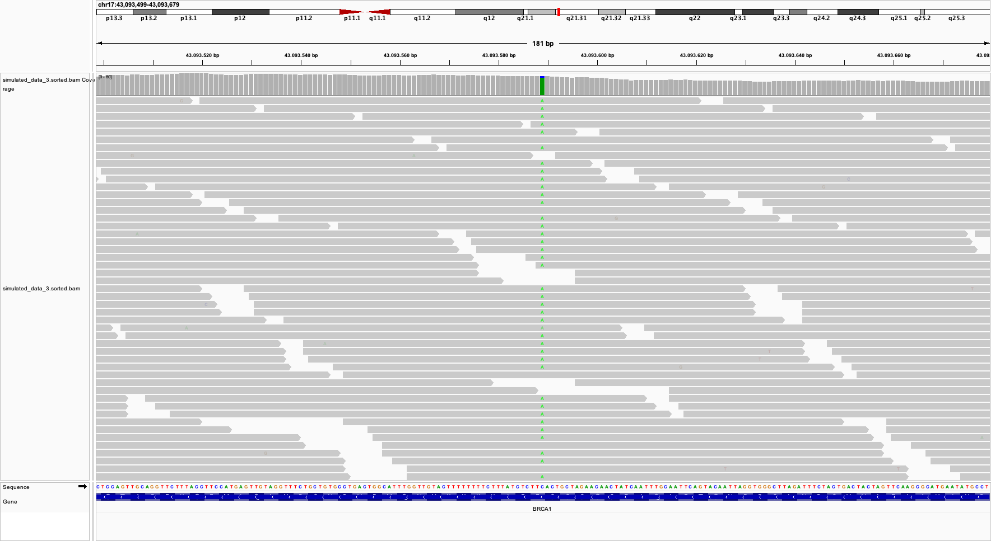

Bio-informatica groepswerk handleiding
Introductie
Somatische varianten zijn genetische veranderingen die niet overgeërfd zijn, maar tijdens iemands leven in specifieke cellen ontstaan. Deze varianten zijn vooral belangrijk in de context van kanker, waar ze een cruciale rol spelen bij het ontstaan en de progressie van de ziekte. Het doel van somatische variant calling is om deze niet-geërfde mutaties te identificeren in DNA sequencing data van tumoren en andere stalen.
Dit proces omvat:
- Sequencing van tumorweefsel of bloedcellen van een patiënt.
- Alignment van de sequentiedata aan een referentiegenoom.
- Identificatie van posities waar de tumorsequentie verschilt van het referentiegenoom. Dit noemen we varianten.
- Filteren van de gevonden varianten om prognostisch, diagnostisch of therapeutisch relevante varianten te vinden.
Het belang van somatische variant calling ligt in verschillende gebieden:
- Kankerdiagnostiek: Het helpt bij het identificeren van de specifieke mutaties die een rol spelen in een individuele tumor.
- Gepersonaliseerde behandeling: Kennis van de somatische varianten kan helpen bij het kiezen van de meest effectieve behandeling voor een patiënt.
- Onderzoek: Het draagt bij aan ons begrip van de genetische basis van kanker en andere ziekten.
- Monitoring: Het kan worden gebruikt om de evolutie van een tumor in de tijd te volgen en de respons op behandeling te evalueren.
In dit groepswerk doorlopen we de stappen die nodig zijn om somatische variant calling uit te voeren. We leren de basisprincipes van sequentieanalyse en specifieke uitdagingen van het identificeren van somatische mutaties. Hierbij reflecteren we bij elke stap over de verkregen resultaten.
VS Code op de Vlaamse Supercomputer Centrum infrastructuur
Om de bio-informatica stappen uit te voeren in dit groepswerk gaan we gebruik maken van de VSC (Vlaamse Supercomputer Centrum) infrastructuur. We kunnen de VSC infrastructuur op verschillende manieren benaderen. De meest gebruiksvriendelijke manier is het KU Leuven OnDemand platform. Om in te loggen op dit platform doorloop je volgende stappen:
- Surf met je browser naar https://ondemand.hpc.kuleuven.be
- Kies hier de optie om in te loggen met een VSC account: “Partner organizations: VSC account”
- Log in met je UHasselt account
- Bij de vraag “Authorize vsc-challenge?” antwoord je “Authorize”
Je bent nu ingelogd op het KU Leuven OnDemand platform. Hiermee kan je vanuit je webbrowser een aantal populaire applicaties opstarten op de Vlaamse SuperComputer. Meer achtergrond kan je vinden in de handleiding.
Voor het groepswerk gaan we gebruik maken van de Visual Studio Code (VS Code) applicatie. Dit is een populaire applicatie om code te schrijven die een ingebouwde bestands browser en terminal vensters heeft. Om VS Code te starten via het OnDemand platform doorloop je de volgende stappen.
- Klik op het “code-server” icoon.
- Er verschijnt een formulier met een aantal opties. Controleer volgende opties en pas aan indien nodig.
- Account: lp_h_edu_bioinformatics_2024
- Number of hours: 1 (of meer als je langer wenst te werken aan de opdracht)
- Required memory per core in megabytes:: 6800
- Klik op “Launch”
- Een overzicht van jouw recente sessies verschijnt met bovenaan de VS Code sessie met status “Queued”

Nu moet je even wachten tot de VS Code sessie gestart is. Normaal duurt dit maar enkele seconden. Het zou mogelijk zijn dat je ook wat langer moet wachten als de VSC infrastructuur druk bezet is. Wanneer de sessie gestart is verschijnt “Running” en wordt het kader groen:
Klik nu op “Connect to Visual Studio Code”. De VS Code interface verschijnt.
De sessie op de VSC cluster zal blijven openstaan tot de gevraagde tijd voorbij is of de sessie manueel gestopt wordt (rode “cancel” knop). Als je klaar bent met werken en de sessie toch laat openstaan gaat de VSC cluster onnodig gereserveerd worden en zullen andere gebruikers nodeloos moeten wachten. Sluit daarom de sessie af als je eerder klaar bent met werken dan de gevraagde tijd. Je kan steeds een nieuwe sessie starten!
Introductie tot Linux Shell/Bash
In dit groepswerk zullen we verschillende Linux
Wat is een Shell?
Een shell is een programma dat een interface biedt voor gebruikers om met het besturingssysteem te communiceren. De meest voorkomende shell in Linux-systemen heet Bash (Bourne Again SHell). Wanneer je de opdrachtregel gebruikt, typ je opdrachten in de shell.
Basisbegrippen
Opdrachtprompt: Hier typ je je opdrachten. Het eindigt meestal met een
$-teken.Opdrachten: Dit zijn instructies die je aan de computer geeft.
Argumenten: Aanvullende informatie die je aan een opdracht geeft.
Opties: Wijzigen het gedrag van opdrachten, meestal beginnend met een streepje (
-).
Basisopdrachten
pwd (Print Working Directory)
Toont je huidige locatie in het bestandssysteem.
$ pwd
/home/gebruikersnaamls (List)
Geeft een lijst van bestanden en mappen in de huidige directory.
$ ls
Documenten Downloads Afbeeldingen MuziekOpties:
ls -l: Lang formaat, toont meer details zoals de eigenaar van het bestand en de bestandsgrootte in bytes.ls -a: Toont verborgen bestanden (die beginnen met een punt)ls -lh: Toont de grootte van de bestanden (in de kolom) in een eenvoudig formaat (K: kilobyte,M: megabyte,G: gigabyte).
cd (Change Directory)
Verplaatst je naar een andere directory.
$ cd DocumentenSpeciale directories:
.: Huidige directory..: Bovenliggende directory~: Thuisdirectory van de gebruiker
mkdir (Make Directory)
Maakt een nieuwe directory aan.
$ mkdir NieuweMapcp (Copy)
Kopieert bestanden of directories.
$ cp bestand.txt Documenten/Om een directory en zijn inhoud te kopiëren, gebruik de -r (recursief) optie:
$ cp -r MapA MapBmv (Move)
Verplaatst of hernoemt bestanden en directories.
$ mv bestand.txt Documenten/
$ mv oudenaam.txt nieuwenaam.txtrm (Remove)
Verwijdert bestanden of directories. Wees voorzichtig met deze opdracht!
$ rm bestand.txtOm een directory en zijn inhoud te verwijderen, gebruik de -r optie:
$ rm -r MapNaamcat (Concatenate)
Toont de inhoud van een bestand.
$ cat bestand.txtecho
Print tekst naar het scherm.
$ echo "Hallo, Wereld!"
Hallo, Wereld!Opdrachtstructuur
De meeste opdrachten volgen deze structuur:
opdracht [opties] [argumenten]Bijvoorbeeld:
$ ls -l DocumentenHier is ls de opdracht, -l een optie, en Documenten een argument.
Tips
- Gebruik de pijltjestoetsen omhoog en omlaag om door je opdrachtgeschiedenis te navigeren.
- Gebruik Tab voor automatische aanvulling van bestands- en mapnamen.
- Gebruik
mangevolgd door een opdrachtnaam om de handleiding te zien (bijv.man ls).
Oefenopdrachten
Deze opdrachten dienen louter om jezelf vertrouwd te maken met een Linux shell, ze maken geen deel uit van het verslag.
- Maak een directory genaamd “BioinformaticaCursus” in je thuisdirectory.
- Maak binnen “BioinformaticaCursus” drie subdirectories: “Data”, “Scripts” en “Resultaten”.
- Maak een leeg bestand genaamd “notities.txt” in de “BioinformaticaCursus” directory.
- Toon de inhoud van “BioinformaticaCursus” in lang formaat.
- Verplaats “notities.txt” naar de “Resultaten” directory.
- Kopieer “notities.txt” van “Resultaten” naar “Data”.
- Verwijder het “notities.txt” bestand uit de “Data” directory.
Kwaliteitscontrole met FastQC
Doel
Het hoofddoel van FastQC is om een snelle kwaliteitscontrole uit te voeren op ruwe sequentiedata afkomstig van high-throughput sequencing pijplijnen (FASTQ formaat). Het helpt bij het identificeren van problemen die kunnen voortkomen uit de sequencer zelf of de bibliotheekvoorbereiding.
Het FASTQ-formaat
Wat is FASTQ?
FASTQ is een tekstbestandsformaat voor het opslaan van zowel nucleotidensequenties (reads) als hun corresponderende kwaliteitsscores. Het wordt veel gebruikt voor het opslaan van gegevens die afkomstig zijn van sequencing-apparaten.
Voorbeeld van een FASTQ-entry
@SEQ_ID
GATTTGGGGTTCAAAGCAGTATCGATCAAATAGTAAATCCATTTGTTCAACTCACAGTTT
+
!''*((((***+))%%%++)(%%%%).1***-+*''))**55CCF>>>>>>CCCCCCC65Structuur van een FASTQ-bestand
Een FASTQ-bestand bestaat uit blokken van vier regels per sequentie:
- Een regelbeginlijn die start met ‘@’, gevolgd door een sequentie-identifier
- De ruwe sequentiegegevens
- Een regel die begint met ‘+’, optioneel gevolgd door dezelfde sequentie-identifier
- De Phred kwaliteitsscores voor de sequentie in gecodeerde vorm, één karakter per nucleotide.
Een kwaliteitsscore is de kans dat de nucleotide op die positie foutief gecalled werd. De relatie tussen de score \(Q\) en de kans \(P\) wordt gegeven door onderstaande formule:
\[ P = 10^{\frac{-Q}{10}} \]
Zo staat ( voor een Pred score van 7 wat overeen komt met een kans van 20% op een foutieve call. Hoe zuiverder het signaal is de sequencer, hoe zekerder de call. Het staal, de staal- of bibliotheekvoorbereiding en de sequencing(reagentia) kunnen aanleiding geven tot minder kwalitatieve data. Die slechte kwaliteit zal in de verdere bio-informatica analyse resulteren in een slecht of onbetrouwbaar resultaat. Daarom is de eerste stap in een bio-informatica analyse van sequencing data een kwaliteitscontrole op basis van de Phred kwaliteitsscores is de FASTQ bestanden. Het FastQC programma berekend samenvattende statistieken over alle entries in een FASTQ bestand en geeft deze weer in een rapport.
Opdrachten
Voer volgende commando’s uit in de VS Code terminal.
Op de VSC infrastructuur is er bijzonder veel software geïnstalleerd en beschikbaar voor gebruik. Vooraleer we een bepaald software programma kunnen gebruiken moeten het wel nog inladen via het module commando. Na het inladen blijft de software de hele sessie beschikbaar.
Laad de FastQC module
module load FastQC/0.11.8-Java-1.8.0_162Voer FastQC uit op één FASTQ read-bestand
fastqc naam_van_fastq_bestand.fastq.gzPas de naam van het FASTQ bestand aan naar de naam van jouw bestand in het bovenstaande commando.
Het FastQC rapport wordt gegenereerd, dit duurt enkele seconden. Hierna zie je het rapport (bv naam_van_fastq_bestand_fastqc.html) verschijnen in de linkerbalk. Om het rapport te openen moeten we het eerst downloaden (rechtsklikken + download).
Het interpreteren van het FastQC HTML-rapport
Basic Statistics: Geeft een overzicht van het bestand, waaronder totaal aantal sequenties, sequentielengte en GC-gehalte.
Per base sequence quality: Toont hoe de kwaliteitsscores (Phred scores) verlopen over de lengte van de reads. De blauwe lijn geeft de gemiddelde kwaliteitsscore mee over alle reads. Normaal neemt de kwaliteitsscore af met de lengte van de reads. Bij een goede gelukte sequencing blijft het gemiddelde ook naar het einde van de reads toe voldoende hoog.
- Groen gebied: Goede kwaliteit
- Oranje gebied: Redelijke kwaliteit
- Rood gebied: Slechte kwaliteit
Per sequence quality scores: Geeft de verdeling van kwaliteitsscores over alle sequenties. We verwachten een normale verdeling met een gemiddelde hoger dan 30.
Per base sequence content: Toont de verhoudingen van basen op elke positie.
Per sequence GC content: Vergelijkt de waargenomen GC-inhoudverdeling met een theoretische normale verdeling.
Per base N content: Toont het percentage van basen op elke positie die niet konden worden bepaald (N).
Sequence Length Distribution: Voor de meeste platformen zou dit een scherpe piek moeten zijn.
Sequence Duplication Levels: Hoge duplicatieniveaus kunnen duiden op PCR-bias.
Overrepresented sequences: Lijst van sequenties die vaker voorkomen dan verwacht.
Adapter Content: Toont de aanwezigheid van vaak gebruikte adapters in je bibliotheek.
Opdrachtvragen:
- Hoeveel sequenties/reads zijn er in het FASTQ bestand aanwezig?
- Wat is de gemiddelde kwaliteitsscore over alle basen en reads? Geef ook de interpretatie van deze score.
- Hoe verandert de kwaliteitsscore over de lengte van de reads?
Read Mapping met BWA
Doel
In deze stap worden de sequenties in de FASTQ-bestanden uitgelijnd (gealigneerd) met een referentiegenoom. Het resultaat zal de meest waarschijnlijke oorsprong van de read zijn alsook op welke manier deze verschilt van het referentie genoom. Dit proces gebruikt algoritmen om te bepalen waar elke read het best past op het referentiegenoom. Het resultaat van deze alignment wordt opgeslagen in SAM- of BAM-formaat. BWA (Burrows-Wheeler Aligner) is een veelgebruikte tool om reads te aligneren tegen een referentiegenoom.
SAM-formaat (Sequence Alignment/Map)
Wat is SAM?
SAM is een tekstbestandsformaat voor het opslaan van sequentie-alignments. Het wordt gebruikt om te beschrijven hoe sequenties zijn uitgelijnd ten opzichte van een referentiegenoom.
Structuur van een SAM-bestand
Een SAM-bestand bestaat uit: - Een optionele headergedeelte (regels die beginnen met @) - Alignment-gedeelte met één regel per alignment
Voorbeeld van een SAM-entry
@SQ SN:chr1 LN:248956422
...
@RG ID:simulated_data_3 SM:simulated_data_3
@PG ID:bwa PN:bwa VN:0.7.17-r1188 CL:bwa mem -R @RG\tID:simulated_data_3\tSM:simulated_data_3 /staging/leuven/stg_00156/references/hg38.fa simulated_data_3.fastq.gz
SEQ_ID 0 chr12 120999772 60 101M * 0 0 GGGGTGGGGT... TG FFF:FFFFF... NM:i:0 MD:Z:101 AS:i:101 XS:i:19 RG:Z:simulated_data_3Uitleg
We overlopen even de belangrijkste velden in het SAM formaat
SEQ_ID- Dit is de identifier van de read/sequentie.0- Dit is de FLAG waarde. Een 0 betekent:- De read is unpaired
- De read is gealigneerd naar de forward strand
- Geen andere speciale eigenschappen
chr12- De naam van het referentie chromosoom waar de read naartoe gemapt is.120999772- De startpositie van de alignment op het referentie chromosoom (1-based).60- De mapping quality score (MAPQ). Een score van 60 is zeer hoog en geeft aan dat de aligner zeer zeker is van deze mapping positie.101M- De CIGAR string.101Mbetekent dat alle 101 bases van de read perfect aligneren met het referentiegenoom (M = match of mismatch).GGGGTGGGGT...- De read sequentie (hier afgekort met …).FFF:FFFFF...- De kwaliteitsscores in Phred formaat (hier afgekort).
De optionele velden aan het eind: - NM:i:0 - Aantal mismatches in de alignment (hier 0, perfect match) - MD:Z:101 - String die exact beschrijft waar mismatches zitten. 101 betekent 101 matches achter elkaar - AS:i:101 - Alignment score (101 is hoog, goede alignment) - XS:i:19 - Secundaire alignment score (score van de op-één-na beste alignment positie)
Dit is duidelijk een zeer goede alignment want: - Hoge MAPQ score (60) - Perfect match (NM:i:0) - Grote alignment score (AS:i:101) - Groot verschil tussen beste en tweede beste alignment (AS:i:101 vs XS:i:19)
In de praktijk gaan we de alignments in een SAM bestand nooit manueel inspecteren maar zullen we samenvattende statistieken berekenen zoals
fastqcdoet met een FASTQ bestand.
Opdrachten
Laad de BWA module
module load BWA/0.7.17-GCC-10.3.0Aligneer de reads met volgende commando’s.
# We slaan eerst de bestandslocatie van het referentiegenoom op in een variabele REF
REF=/staging/leuven/stg_00156/references/hg38.fa
# We voeren nu BWA uit en schrijven de output weg naar aligned.sam
bwa mem -R '@RG\tID:samplename\tSM:samplename' $REF naam_van_fastq_bestand.fastq.gz > mijn_staal.samPas de naam van het FASTQ bestand aan naar de naam van jouw bestand in het bovenstaande commando. Pas ook de naam van output bestand aan naar bv de naam van je groepje.
De optie
-R '@RG\tID:samplename\tSM:samplename'voegt een staalnaam en ID toe aan het SAM bestand. Dit is noodzakelijk voor sommige software programma’s die we later zullen gebruiken.
BAM-formaat (Binary Alignment/Map)
Wat is BAM?
BAM is de binaire versie van het SAM-formaat. Het bevat dezelfde informatie als SAM, maar in een gecomprimeerde, binaire vorm. Bestanden zijn dus een stuk kleiner en dat spaart ruimte bij het archiveren en tijd bij het kopiëren van bestanden. Om BAM files efficient te kunnen verwerken worden de reads vaak gesorteerd volgens positie in het referentiegenoom en wordt er een index aangemaakt. Dit maakt de vervolgstappen een stuk sneller.
Kenmerken van BAM
- Neemt minder opslagruimte in beslag dan SAM
- Sneller te verwerken door computers
- Kan worden geïndexeerd voor snelle toegang tot specifieke regio’s
Voorbeeld
Omdat BAM een binair formaat is, kunnen we geen leesbaar voorbeeld geven zoals bij SAM. In de praktijk kan je speciale software gebruiken om BAM-bestanden te bekijken of te bewerken.

Bovenstaande figuur is een screenshot gemaakt met Integrative Genomics Viewer (IGV), een populair programma om BAM files en andere genomische databestanden weer te geven t.o.v. een referentiegenoom. De grijze balken zijn de reads gepositioneerd t.o.v. het referentiegenoom. Op de gekleurde posities verschilt de read sequentie van het referentiegenoom.
Opdracht 2
Zet het SAM bestand om naar een gesorteerd BAM bestand met samtools.
module load SAMtools/1.13-GCC-10.3.0
# Sorteer het BAM bestand en sla het gesorteerde bestand op onder een nieuwe naam
samtools sort mijn_staal.sam -o mijn_staal.sorted.bam
# Indexeer het gesorteerde BAM bestand. De index wordt opgeslagen als NAAM_VAN_BAM.bai
samtools index mijn_staal.sorted.bamMet samtools flagstat kan je een aantal eenvoudige statistieken van het BAM bestand berekenen.
samtools flagstat mijn_staal.sorted.bamOpdrachtvragen:
- Wat is de bestandsgrootte van het SAM en BAM bestand?
- Hoeveel reads zijn er gealigneerd tegen het referentiegenoom?
- Wat is het percentage van de totaal aantal reads die gealigneerd zijn?
- Kan je redenen bedenken waarom een read niet met het referentiegenoom aligneerd? (Meerdere mogelijkheden)
Variant Calling met Mutect2
Variant calling is het proces waarbij we verschillen (varianten) identificeren tussen een sequentiedataset en een referentiegenoom. Het is een cruciale stap in veel genomische analyses, van het bestuderen van genetische ziekten tot het begrijpen van evolutie. De meeste software tools voor Variant Calling vertrekken van uitgelijnde reads in het BAM formaat. Door op elke positie in het referentiegenoom de uitgelijnde reads te vergelijken zal de software varianten kunnen opsporen. Mutect2 is een veelgebruikte bio-informatica tool om somatische varianten te identificeren uit de uitgelijnde reads.
Wanneer er een verschil met het referentiegenoom gevonden wordt, wil dit nog niet noodzakelijk zeggen dat het om een werkelijke variant in het staal gaat. Sequencing fouten of problemen met de alignment kunnen ook zulke verschillen veroorzaken. De kwaliteitsscores in de reads vormen hier een belangrijk hulpmiddel voor de software. Twee belangrijke statistieken die gebruikt worden om “echte” varianten van vals positieve te onderscheiden zijn de depth, het aantal reads dat overlapt met de positie van de variant, en de allele frequency, het percentage van de reads waar de variant werd teruggevonden. Afhankelijk van de gebruikte technologie wordt een minimale depth en allele frequency voorop gesteld. Als de variant onder deze waarden valt wordt deze als vals positief beschouwd.
VCF-formaat (Variant Call Format)
Wat is VCF?
VCF is een tekstbestandsformaat voor het opslaan van genoomvariaties zoals SNPs, inserties, deleties en structurele varianten. Alle genoomvariaties worden weergegeven ten opzichte van het gekozen referentiegenoom.
Structuur van een VCF-bestand
Een VCF-bestand bestaat uit: - Meta-informatieregels (beginnen met ##) - Een headerregel (begint met #) - Dataregels met informatie over elke variant
Voorbeeld van een VCF-entry
##fileformat=VCFv4.3
#CHROM POS ID REF ALT QUAL FILTER INFO
20 14370 rs6054257 G A 29 PASS NS=3;DP=14;AF=0.5;DB;H2Uitleg
- CHROM: Chromosoom
- POS: Positie van de variant
- ID: Optionele variant identifier (bijv. rs-nummer van gekende varianten in de dbSNP databank)
- REF: Referentie-allel zoals het in het referentiegenoom aanwezig is
- ALT: Alternatief allel dat gevonden werd in het staal
- QUAL: Kwaliteitsscore
- FILTER: Filter status (PASS betekent dat de variant alle filters heeft gepasseerd)
- INFO: Aanvullende informatie over de variant zoals de depth (
DP) en de allele frequency (AF)
Opdrachten
Voer variant calling uit met Mutect2 op de gesorteerde BAM file.
module load GATK/4.1.9.0-foss-2018a-Java-11.0.4
REF=/staging/leuven/stg_00156/references/hg38.fa
gatk Mutect2 \
-R $REF \
-I mijn_staal.sorted.bam \
-O mijn_staal.vcfOpdrachtvragen:
- Wat is de bestandsgrootte van het VCF bestand?
- Kan je intuïtief uitleggen waarom het VCF bestand veel kleiner is dan een SAM/BAM bestand?
Open nu de aangemaakte VCF file in VS Code en beantwoord volgende vragen. Bovenaan in het bestand staan er ongeveer 500 meta-informatieregels (beginnen met ##). Deze mag je negeren en verder scrollen naar de regel die begint met #CHROM. Hieronder staan alle varianten, één per regel.
Opdrachtvragen deel 2:
- Hoeveel varianten werden er gevonden in je staal?
- Bestudeer de eerste variant in het VCF bestand.
- Op welk chromosoom en positie is de variant gevonden?
- Wat is de sequentie in het referentie genoom?
- Wat is de sequentie in het staal?
- Wat zijn de depth en allele frequency van de variant?
Variant Annotatie met SnpEff
In het VCF bestand dat je bekomen bent bij de vorige stap zitten bijzonder veel varianten. De overgrote meerderheid heeft geen belangrijke impact omdat ze bijvoorbeeld in intergenische regio’s of intronen liggen of synonieme mutaties zijn (geen verandering in aminozuursequentie). Het identificeren van één of enkele varianten die aan de basis van een ziektebeeld liggen (zoals kanker) is dus een zoektocht naar een speld in een hooiberg! Een belangrijk hulpmiddel in deze zoektocht is variant annotatie waarbij we voor elke variant de impact op het eiwit gaan bepalen. Een veelgebruikte tool hiervoor is snpEff. SnpEff maakt gebruik van een databank die gen en eiwitposities ten opzicht van het referentiegenoom bevat. Op die manier kan de impact van een variant op de eiwitsequentie bepaald worden.
module load snpEff/5.2c-GCCcore-10.3.0-Java-11
# de bestandslocatie van de snpeff databank slaan we op in een variabele
SNPEFF_REF=/staging/leuven/stg_00156/references/snpEff
# we voeren snpeff uit op ons VCF bestand en slaan de output op in een nieuw VCF bestand
snpEff -dataDir $SNPEFF_REF hg38 input_varianten.vcf > varianten.annotated.vcfOpen de geannoteerde VCF in VS Code. Kijk naar het ANN= veld in de output VCF voor gedetailleerde annotaties. In dit veld staat de annotatie van deze variant als volgt:
Het SnpEff HTML-rapport begrijpen
SnpEff genereert naast geannoteerde varianten ook een uitgebreid HTML-rapport met statistieken en visualisaties (snpEff_summary.html). Download het bestand en open het in je browser. Laten we nu dit stap voor stap doornemen.
A. Algemene Statistieken Sectie
- Variants rate details:
- Aantal varianten per chromosoom
- Totaal aantal verwerkte varianten
- Number variants by type:
- SNP (Single Nucleotide Polymorphisms)
- MNP (Multiple Nucleotide Polymorphisms)
- INS (Inserties)
- DEL (Deleties)
- Number of effects by impact:
- HIGH: Grote impact op genfunctie (bijvoorbeeld stopcodons)
- MODERATE: Mogelijk effect op genfunctie (bijvoorbeeld missense varianten)
- LOW: Waarschijnlijk geen effect op genfunctie (bijvoorbeeld synonyme varianten)
- MODIFIER: Meestal in niet-coderende regio’s
- Number of effects by functional class:
- Missense
- Nonsense
- Silent
- Splice site variants
- etc.
Opdrachtvragen
Deel 1: Basis Statistieken
Open het SnpEff HTML-rapport voor je geannoteerde varianten en beantwoord de volgende vragen:
- Hoeveel varianten zijn er in totaal geanalyseerd?
- Wat is de verdeling tussen SNPs, inserties en deleties?
- Welk chromosoom heeft de meeste varianten?
- Bereken het percentage varianten dat als ‘HIGH impact’ is geclassificeerd.
Deel 2: Variant Effects Analyse
Bekijk de ‘Number of effects by type and region’ sectie:
- Wat zijn de top 3 meest voorkomende effecten?
- Hoeveel missense varianten zijn er gevonden?
- Hoeveel splice site varianten zijn er?
Deel 3: Genoomregio’s
Bestudeer de ‘Region counts’ tabel:
- Welk percentage van de varianten ligt in:
- Exonen?
- Intronen?
- Intergene regio’s?
- Is deze verdeling wat je zou verwachten? Waarom wel/niet?
Deel 4: Codon Veranderingen
Analyseer de ‘Codon Changes’ sectie:
- Wat zijn de meest voorkomende codon veranderingen?
- Hoeveel stop-gained mutaties zijn er?
- Zijn er bepaalde aminozuur veranderingen die vaker voorkomen dan andere?
Variant filtering met SnpSift
Nadat we een geannoteerde VCF file hebben bekomen kunnen op basis van deze annotatie varianten filteren. Gezien de grote hoeveelheid varianten die typisch gevonden worden in een sequencing experiment is dit een cruciale stap.
Gebruik volgende commando om alle varianten met een allele frequency groter dan 50% met een hoge impact te filteren en in een nieuw bestand op te slaan.
SNPSIFT_JAR=/vsc-hard-mounts/leuven-apps/rocky8/skylake/2021a/software/snpEff/5.2c-GCCcore-10.3.0-Java-11/SnpSift.jar
java -jar $SNPSIFT_JAR filter "( GEN[*].AF > 0.50 ) & ( ANN[*].IMPACT = 'HIGH' )" varianten.annotated.vcf > varianten.annotated.filtered.vcfVCF bestanden zijn moeilijk te interpreteren na toevoegen van de annotatie door de grote hoeveelheid informatie die erin staat. Met het onderstaande commando kan je alle varianten in het gefilterde VCF bestand in een overzichtelijke tabel weergeven.
java -jar $SNPSIFT_JAR extractFields -s "," -e "." varianten.annotated.filtered.vcf CHROM POS REF ALT "ANN[0].GENE" "ANN[0].EFFECT" "ANN[0].HGVS_C" "ANN[0].HGVS_P"Opdrachtvragen
- Hoeveel varianten hou je over na filtering.
- In welke genen liggen deze varianten?
- Wat is de sequentieverandering die de variant veroorzaakt in de transcriptsequentie en eiwitsequentie?